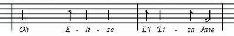

How does RapidReader accelerate your reading speed so easily ?
Take a new kind of high speed text display proven in the laboratory and add the rhythms of human speech for greater ease and comprehension and you have RapidReader for saving you time everyday.
RapidReader's® patented technology works by optimizing the display of text to eliminate the most common barriers to reading speed. It enables you to naturally read the way you see the rest of the world: by just looking. It uses the power of the computer to enhance your ability to read much faster. This however is much more complicated than just displaying words on a screen. HOW the words are displayed is the key to everyday practicality for accelerating your reading speed and ergonomic comfort. After more than 12 years of research and development RapidReader was created specifically for this purpose. See below to learn how it works.
In the Lab: The Search for Higher Reading Speed
Why RapidReader Works: The Nature of Reading
What would it take to read faster? That was the question clinical researchers had been asking for years. And they found an important answer. They changed the text into a sort of movie. This method used in the original Johns Hopkins study (and many other studies since) is called "Rapid Serial Visual Display" (RSVP). It has a number of powerful advantages when it comes to accelerating your reading speed. At Johns Hopkins lab the subjects were reading 1600 words per minute with no training whatsoever.*
The RapidReader Difference:The Importance of Rhythm in Human Speech
Where RapidReader is unique is its patented ability to analyze and display the text to you in the natural rhythms of human speech.

The result? Much easier reading and most importantly, enhanced comfort and comprehension even at very high speeds.
Ease, Comfort and Comprehension
RapidReader goes far beyond the basic RSVP method. The problem is that for everyday use the speed gained with standard RSVP isn't worth the tradeoff in reading discomfort. The repetitive, robotic, machine-gun quality of the word display was tiring and unnatural. This turned out to be a major practical problem for everyday reading.
RapidReader changed all that with a breakthrough that took nearly 12 years of research, development and testing with thousands of people. Now the speed advantages of a computer display can make accelerated reading a "lean back", natural experience.The result is unparalleled ease for everyday use.
If you think back to any conversation you've had you'll realize that verbal communication is filled with pauses and timing for emphasis. This contributes greatly to our understanding. RapidReader is able to provide this important aspect of comprehension by analyzing the document file to create the timing for the appearance of each word. In other words It is designed to mimic human speech. Getting this timing right took several years of research and development. As you change your reading speed between 100 and 950 wpm, the rhythm subtly adapts to retain comfort, naturalness and increase comprehension.
*For more about the neuropsychological of accelerated reading please visit the "Science behind RapidReader" page.
What About Comprehension?
Why is Reading Faster So Difficult?
There are two primary reasons for the "information bottleneck" when we read.
- Having to Move our Eyes Along a Line of Text
- "Sounding Out" the Words as We Read
How does RapidReader eliminate the most common barriers to reading speed?
- The "Field of Vision" word display means you don't have to move your eyes .
- Text delivered in natural rhythms increases comfort and comprehension
- The Font size can be very large
- At higher speed the tendency to "sound out" the words disappears
- You can sit back and just watch the text flow without scrolling or turning pages
- No distracting visual clutter on the screen
- Customizable Font
- Customizable viewing area
- Sit at any distance that's comfortable for you
Eliminating the Need for Eye Movement
RapidReader enables you to read the way you see the rest of the world... By simply looking at it. Eye movement is one of the principal barriers to reading speed. For thousands of years we've essentially had to read the same way. We had to use muscles to move our eyes from one word to the next. Compared with how fast we can think it's extremely inefficient. It means basically your brain is always waiting for your eye muscles to catch up. Your eyes must constantly move-stop-focus-move-stop-focus over and over again. That's a lot of work. RapidReader does that work for you by bringing the words directly into the center of your field of view.
No More "Sounding Out" Words to Ourselves
Another major factor that slows us down is "sounding out" words to ourselves as we read them.
This is a left over from when we were learning to read as children. Your teacher or parent would point to a word in a book and pronounce it for you. Eventually you'd make the association between the symbol on the page and the sound. You learn "C-A-T" as the symbol for a furry animal that scratches up the furniture. However, once you learned to recognize the symbol, you no longer needed to pronounce it to know what it means. We Humans are Blazingly Fast at Pattern Recognition.
Once you get past a certain reading speed the tendency to sound out goes away.* (Usually about 250 wpm). Past that speed you're simply reading too fast to to be talking to yourself. Suddenly you begin to read by quickly understanding what you're seeing.
In brain scans researchers discovered that this method of accelerated reading moved the process from the speech centers of the brain to the far faster visual cortex.
*For more about the visual cortex, Broca's area and Wernicke's area in accelerated reading please visit the "Science behind RapidReader" page.
But don't take our word for it. Download RapidReader Standard and see for yourself. For a limited time it's absolutely FREE.
Two Versions Standard and Pro...
Student and Military Discounts Now Available... info
Using RapidReader the First Time
What is Flooding and Why Do You Care?
For most people RapidReader is a new kind of experience and in the beginning it may take a couple of minutes to get used to.
Everyone has a different speed they're comfortable with for different kinds of reading.
The Flooding Technique is a clinically proven way to easily multiply your speed the first time you use RR.
SEE HERE how to do it. You'll be amazed at how quickly you'll comfortably accelerate your reading speed..